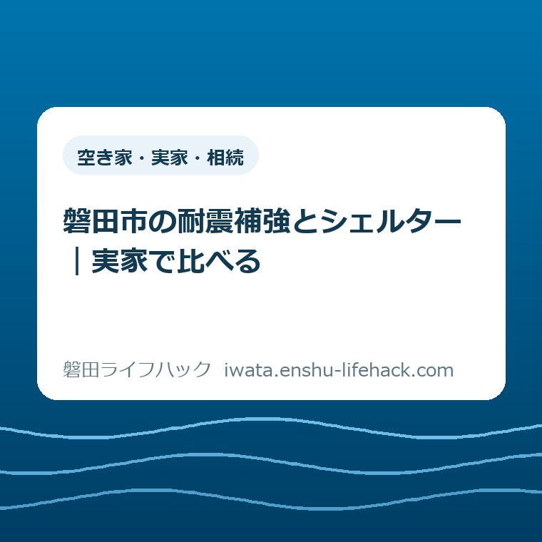

更新：2026.09.22 空き家・実家・相続
磐田市の耐震補強とシェルター｜実家で比べる

この記事の要点
Q. 親の実家は、耐震補強とシェルターのどちらを考えればいい？
A. 磐田市の助成は築年、構造、居住状況などで対象が変わります。耐震補強は住宅の耐震性を高め、シェルターは設置した空間で身を守るための備えです。2026年度も補強助成は継続。どちらも契約前の交付決定が必要です。今日は実家の築年を確認し、適用条件と補助額は市公式ページと建築住宅課で確かめてください。
実家の相談は、家族の予定表から始まる
磐田市の耐震補強と耐震シェルターの助成は、古い家なら一律に使える制度ではありません。築年、木造かどうか、現在の使い方などで対象が変わります。親が住む実家についても、記事だけで補助の可否は決まりません。まず、その前提を置いて比較します。
実家の工事を考える子世代は、すでに手間を払っています。親に電話し、きょうだいの予定を聞き、帰省できる日を探す。工事費を出せるか考える間も、親の通院や自分の仕事は続きます。話し合いが一度でまとまらないことを、関心の低さと結びつける必要はありません。
この記事を書いている大石浩之（磐田市／不動産業）は、家族が比較する順番を大切にしたいと考えます。最初に補助の上限だけを見ると、使える制度のほうへ暮らしを寄せがちです。先に親がどこで過ごすかを置き、その後で家と制度の条件を重ねる。その順番で読み進めてください。
以下は2026年9月15日に確認した磐田市の公表情報と、私の提案を分けた記事です。申請書を一枚ずつ埋めるための説明ではなく、大きな工事を決めかねる家族が、二つの備えを同じ物差しで比べるために書いています。
耐震補強とシェルターは、守る範囲が違う
耐震補強は住宅の耐震性を高める工事で、耐震シェルターは住宅内に身を守る空間を設ける備えです。磐田市の二つの助成案内を読むと、前者は補強計画と住宅の評点、後者は設置する部屋と認められた製品が比較の入口になります。
家全体の弱い部分を調べて補強することと、家の中に保護する空間をつくることは同じではありません。シェルターを置けば住宅全体の耐震性まで上がる、という読み替えはできません。台所や廊下など、設置空間の外にいる時間も、家族の比較から外さないでください。
| 比較すること | 耐震補強 | 耐震シェルター |
|---|---|---|
| 主な目的 | 住宅の耐震性を高める | 設置した空間で身を守る |
| 検討の入口 | 診断と住宅に合う補強計画 | 日常使う部屋と設置条件 |
| 家族が聞くこと | 施工箇所と工事中の暮らし | 使える広さと普段の居場所 |
| 助成の順番 | 補強計画・工事の契約前に交付決定 | 設置工事の契約前に交付決定 |
私は、この表を価格表の前に置くことを勧めます。「安く済むのはどちらか」だけで始めると、同じ範囲を守る二案だと思い込みやすいからです。目的の違いを受け止めたうえで、自分たちが負担できる費用と工事の条件を並べるほうが、後で説明をやり直さずに済みます。
シェルターの図は、家のどこにいても駆け込めることを保証する図ではありません。揺れてから移動することを当てにせず、普段からどの部屋を使うかを考えるための模式図です。製品の性能や設置の可否は、建物を確認する専門家に確かめる必要があります。

2026年度も補強助成は続く。築年だけでは決まらない
磐田市の「耐震補強工事（補強計画一体型）の助成制度」は、2026年4月27日更新のお知らせで実施期間の延長を案内しています。2025年度で終わる予定だった事業が、2026年度も続いている点は、実家の相談を再開する材料になります。
同制度の対象には、1981年5月31日以前に建築された木造住宅という条件があります。耐震診断の総合評点が1.0未満で、補強によって1.0以上とする計画・工事などが対象です。原則として現在居住用であることも示されています。築年が当てはまるだけで、交付が決まるわけではありません。
「総合評点」は、家の耐震性を診断で確かめるときの数値です。子世代が外観や築年から計算するものではありません。昔の診断結果があれば、そこにある数字と報告書の日付を専門家に見てもらう。資料がなければ、診断の入口から市へ聞く。その区別で十分です。
磐田市の「耐震シェルター整備の助成制度」は2026年8月6日更新です。1981年5月31日以前の木造住宅で、現在住んでいること、日常使う居室に設置すること、知事が認めるシェルターであることが条件として挙がっています。普段使わない物置へ置く発想とは、対象の考え方が違います。
家族にとって見落としやすいのは、親の年齢より前に「家がどう使われているか」を見る点です。実家という呼び名だけでは、居住中か空き家かは分かりません。親が住み続ける話と、退去後の家を管理する話を混ぜず、相談時点の使い方をそのまま伝えることを私は勧めます。
住宅の耐震・解体に関する手続きの入口は、耐震診断・耐震改修・解体のガイドにまとめています。この記事で家族の比較軸を整理してから、該当する市の案内へ進む使い方ができます。
親の寝る場所と、工事中の暮らしを紙に置く
親が暮らす実家での比較は、寝室だけでなく、食事、トイレ、日中の居場所を一枚の間取りに置くと具体的になります。これは助成の追加条件ではなく、私が提案する家族の確認方法です。設置できる部屋と、親が本当に使い続けられる部屋を分けて考えます。
例えば、親が一階で寝ているなら、その部屋の出入口や寝具の位置を図に書きます。これは仮の比較例で、個別の相談事例ではありません。シェルターの中に寝具が収まるか、通路が狭くならないか、日常の介助が必要ならその動きができるか。製品名を選ぶ前の質問になります。
一方、耐震補強を検討するなら、どの部屋に工事が入るかを計画と一緒に聞きます。住みながらできるか、部屋を空ける必要があるかは、家や施工内容で変わります。「耐震工事だから必ず仮住まい」「シェルターだから生活への影響はない」と、名称だけで決めないほうがよいと私は考えます。
片付けを親だけに任せない段取りも、比較表の一行に入れたいところです。家具を動かす人、工事中に連絡を受ける人、書類を持つ人。費用には書かれなくても、その役割が空欄だと予定は組めません。きょうだいの負担を均等にするより、誰の担当かが分かる状態を先に目指します。
実家の将来に解体や建て替えが入るなら、耐震工事とは別の確認事項も出ます。土地を掘る工事の段取りについては、埋蔵文化財包蔵地の確認と届出を扱った記事を参照できます。どの家にも届出が要るという意味ではなく、別案に進んだときの確認先を残すためのリンクです。
比較の席に将来の売却額まで持ち込むかは、私も迷います。家計の見通しは要りますが、親が暮らしている部屋の話が、いつの間にか家を処分する話へ変わることも考えられます。私は、今の安全と日々の使いやすさを一枚目にし、将来の住み替えは別の紙で扱うほうがよいと考えます。
良い点——相談を再開できる入口が残った
磐田市が2026年度も耐震補強の助成を続けていることを、私は良い点と受け止めます。2025年度中に家族の話がまとまらなかった世帯でも、市へ相談し直す入口が残ったからです。延長を「今なら必ず使える」という勧誘にせず、条件を確かめる機会として伝えたいところです。
補強とシェルターの両方に案内がある点も、比較の助けになります。大きな工事の話が進まないときに、別の備えについて具体的な設置条件を尋ねられます。ただし私は、二つの制度が並んでいることと、二つの効果が同じであることは、分けて説明する必要があると考えます。
両方の公式ページに契約前の交付決定が必要と書かれている点も、家族の行き違いを防ぐ手がかりです。見積もりを取る係と支払いをする係が別でも、同じ注意事項を共有できます。市の注意書きを、家族の契約の順番へ翻訳できる部分です。
私は、制度の良さは補助額だけで測れないと思います。親の希望を聞く時間、施工内容を理解する時間、家族が負担を相談する時間を組み立てられるかも含めて考えたい。案内を読んだ人が、そのまま契約へ急がずに済む説明があることには意味があります。
注文したい点——補助額の食い違いを家族に解かせない
磐田市のシェルター助成ページには、2026年9月15日の確認時点で、その他の世帯の限度額についてお知らせと補助額欄に異なる記載があります。この記事では、どちらかを正しい金額として採用しません。適用される額は建築住宅課へ確認が必要です。
私は、この食い違いは市側でそろえてほしいと考えます。家族は補助額を見て自分たちの持ち出しを相談します。一人がお知らせを読み、別の一人が下の欄を読めば、同じ市のページを根拠にしても話がずれます。確認の電話を増やす負担まで、家族に背負わせたくありません。
同時に、家族側では未確定の補助額を引いた金額だけで工事を約束しないことを勧めます。見積総額、補助対象になる範囲、確認できた補助額、対象外の費用を分ける。まだ答えが出ていない欄には「未確認」と書けばよく、計算を完成させるために推測の数字を置く必要はありません。
工事代以外にも、家具の移動や一時的な滞在先をどうするかは相談事項になり得ます。それらが補助の対象になると、この記事では断定しません。施工者への見積依頼と、市への対象経費の確認を分けておけば、家族の予算表に同じ費用を二度入れることも避けやすくなります。
「高齢の親だから上乗せがあるはず」という家族の見込みも、そのまま予算に入れないでください。市の世帯区分は、年齢だけでなく同居者などの条件を伴います。実家に誰が住んでいるかを伝えて確認する話であり、離れて暮らす子の感覚で区分を決める話ではありません。
対案・結論——今日は実家の築年を確認する
耐震補強とシェルターで迷う家族が、2026年9月15日に始める一歩として私が勧めるのは、実家の築年を確認することです。1981年5月31日以前かどうかは、二つの制度に共通する入口です。工事を選ぶ会議まで同じ日に開く必要はありません。
手元にある建築確認の資料や建物の登記に関する資料などで、建築時期の手がかりを探します。磐田市の申請案内にも建築年次を確認する書類が挙がっています。ただし、手元の紙で要件を証明できるかは市が確認することです。書類名だけで受付可能と決めつけないでください。
「1981年ごろ」までしか分からなければ、そこで止めて構いません。家族の記憶を無理に月日へ直さず、どの資料で確かめればよいかを市に聞く質問として残します。増築した部分がある、複数の年が書いてある場合も、都合のよい年だけを選ばず、その状況を伝えます。
私は、共有メモに「築年」「何の資料を見たか」「不明な点」の三つだけを残す方法を勧めます。今日は役所へ行けなくても、資料がどこにあるかを親に聞くだけで始められます。書類を探すことが負担なら、現物の確認は次の帰省に回すと決める。その予定も進捗です。
築年の確認ができた後の相談では、市の建築住宅課に「補強とシェルターを比較中で、まだ契約していない」と伝えます。必要な診断や資料、申請の時期はそこで確かめます。この記事では、受付の残枠や個別の交付可否までは確認できていません。

実家の電気火災への備えも検討する場合は、感震ブレーカーの増設型と内蔵型の比較で、分電盤への設置条件と工事費込みの総額を確認できます。
家族の比較メモは、決定事項と未確認を分ける
実家の比較メモには、親の希望と、制度上確認できたことを別々に書くと整理できます。これは私の提案です。「この部屋で寝たい」は親の希望、「設置できる」は施工側の確認です。二つを同じ行にして、希望が技術的な結論に変わってしまわないようにします。
耐震補強の欄には、診断の有無、補強する場所、工事中に使えない部屋を書きます。シェルターの欄には、候補の部屋、製品、設置後の使い方を書きます。分からない欄が残っていても比較表は使えます。空欄を埋める相手が、市なのか施工者なのか家族なのかを添えることが次の相談につながります。
連絡の記録には、確認した日と質問、回答を残します。「申請できそう」と「交付決定が出た」は別です。家族の誰かが施工者に返事をする前に、何が確認済みかを見られるようにします。私は、全員を毎回電話に参加させるより、同じメモを読める形を勧めます。
災害が起きた後に使う証明の話は、予防の工事と別に整理できます。親が住まなくなった家の扱いを考える際は、空き家の被災証明書を扱った記事も参照してください。居住中の実家の耐震化と、空き家になった後の備えを、一つの制度で済ませないための整理です。
大石の視点——決められない家族を、何もしていないと扱わない
私は、工事を決められない家族を、何もしていない家族と扱いたくありません。親の生活を聞き、費用の負担を考え、離れて暮らすきょうだいの予定を合わせる。そこには工事の前から仕事があります。契約書に判を押した日だけを成果にすると、相談を続ける力を削ってしまうと考えます。
私がこの比較で迷うのは、安全のために早く動いてほしい気持ちと、親の日常を大きく変える決断を急がせたくない気持ちの間です。だから、決断そのものを今日の宿題にしません。築年という共通の材料を一つ増やす。そのうえで、補強とシェルターのどちらが合うかを、建物を見られる専門家と比べることを勧めます。これは特定の相談を再現した実話ではなく、私の意見です。
シェルターは「補強を諦めた家のため」と決めつけず、守る空間と使い方から評価する。耐震補強も「補助があるから正解」と決めず、計画と暮らしの負担を見る。私は、家族がその違いを説明できる状態を、契約より先につくりたいと思います。
制度や数値は変わり、家ごとの適用条件も異なります。住宅の安全性や施工方法の個別判断は、建築の専門家へ確認してください。最後は磐田市公式の「耐震補強工事（補強計画一体型）の助成制度」と「耐震シェルター整備の助成制度」を開き、建築住宅課に確認してから進めてください。
よくある質問
磐田市で耐震補強とシェルターを比べるときの疑問を整理します。個別の条件は市公式ページと建築住宅課で確認してください。
シェルターなら、家全体も強くなりますか？
耐震シェルターは設置した空間で身を守るための備えで、住宅全体の耐震補強とは目的が異なります。設置空間の外まで同じように守られるとは考えられません。磐田市の助成は日常使う居室などに条件があります。親の寝る場所と日中の居場所を踏まえ、製品の性能と設置条件を専門家に確認してください。
親が高齢なら、補助は自動的に増えますか？
親が高齢という情報だけでは、磐田市の助成の世帯区分や額は決まりません。同居者などを含む条件の確認が必要です。シェルターのその他の世帯の限度額は、2026年9月15日時点で市ページ内に異なる記載があるため、この記事では断定しません。建築住宅課で適用額を確認してから家族の予算に入れてください。
見積もりをもらったら、契約してから申請できますか？
磐田市は、両制度とも対象となる契約の前に補助金の申請と交付決定が必要と案内しています。耐震補強では補強計画の契約も含みます。見積もりを受け取ったことや申請書を出したことを、交付決定と取り違えないでください。契約前に市公式ページと建築住宅課で自分の手順を確認してください。
参考にした公式情報
- 磐田市「耐震補強工事（補強計画一体型）の助成制度」（2026年9月15日確認）
- 磐田市「耐震シェルター整備の助成制度」（2026年9月15日確認）

最終確認日：2026-09-15 ／ 本記事は公表情報と執筆者の見解を分けて記載しています。制度・数値・公開状況は変更される場合があるため、最新情報は磐田市公式ページでご確認ください。